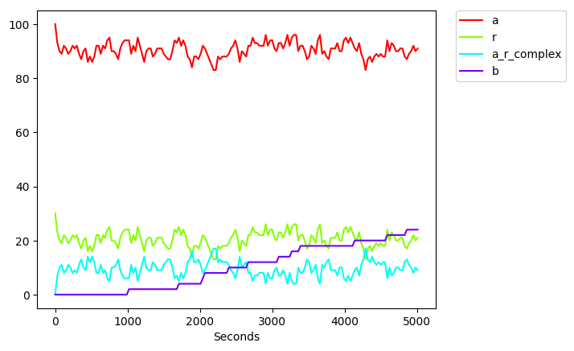

Building the simulator
- Clone the repository
- In the
simulatordirectory, run the gradle taskjar- This creates the simulator output file
simulator/build/libs/simulator.jar
- This creates the simulator output file
- Copy this file to the directory in which you want to run your simulations
Modifying the simulator
To modify the simulator code, clone the repository and modify the code in simulator/src.
A test suite is provided, which can be run using gradle.
Running a simulation
To run a simulation, create a new directory and copy the following files into it:
simulator.jar, the output of building the code using gradlerun_simulation.py, from thesimulatordirectory in the repository- A file called
inputs.txt, containing the following inputs:--model-file model.mdsl --print all --seconds 5000 --seconds-before-print 30 - A file called
model.mdsl, containing the model, for example:# Structure of the cells initial tree { simulation { 3 cell } } # Initial values of species species a contained simulation = 100 ng.ml^-1 species r on cell = 10 receptors.cell^-1 # Parameter values controlling rates of reactions parameter k_on = 0.2 ml.ng^-1.cell.receptors^-1.hour^-1 parameter k_d = 0.005 ng.ml^-1 parameter k_off = k_on / k_d cell.receptors^-1.hour^-1 parameter k_signal = 0.8 cell.receptors^-1.hour^-1 # Reaction of the ligand binding the receptor a around cell binds r on cell modifier k_on <=> a_r_complex on cell modifier k_off # Reaction of the signal being transduced into the cell a_r_complex on cell modifier k_signal => a_r_complex on cell and 2 b contained cell
Then run the following command in this directory:
python run_simulation.py
This will run the simulation, printing the results to the terminal, and writing the results to files in the logs directory.
Analysing simulation results
The file logs/output_Species.csv contains
the concentrations of each species that has been requested for printing (with the --print input),
at each timepoint that has been requested for printing (with the --seconds-before-print or --hours-before-print input).
Its contents will look like the following (the exact numbers may vary for your simulation, as the simulator runs stochastically):
[2019/04/08 16:19:25], a,r,a_r_complex,b,Seconds
[2019/04/08 16:19:25], 100,30,0,0,0
[2019/04/08 16:19:25], 95,25,5,0,30
[2019/04/08 16:19:25], 92,22,8,0,60
[2019/04/08 16:19:25], 94,24,6,0,90
[2019/04/08 16:19:25], 92,22,8,0,120
[2019/04/08 16:19:25], 90,20,10,0,150
[2019/04/08 16:19:25], 89,19,11,0,180
[2019/04/08 16:19:25], 90,20,10,0,210
[2019/04/08 16:19:25], 89,19,11,0,240
[2019/04/08 16:19:25], 90,20,10,0,270
[2019/04/08 16:19:25], 92,22,8,0,300
...
Different output files can be produced by using different log levels (with the --log-level input).
A sample analysis script is provided, to plot the contents of the output_Species.csv file.
This script is called analyse_results.py and can be found in the simulator directory in the repository.
This script can be run in the logs directory after the simulation has finished.
Alternatively, the simulator will run it automatically if the --run-analysis input is provided.
For running the analysis script automatically, two files need to be added to the directory in which the simulation is running:
analyse_results.pycopied from thesimulatordirectory- A file called
python_command.txt, containing the python command on your system
Running this analysis script will produce a plot at logs/output_Species.png, which will look like the following
(the exact numbers may vary for your simulation, as the simulator runs stochastically):

Simulator inputs
These are the inputs that you can pass to the simulator, to control how it runs.
This list can be obtained from the simulator by passing the -h or --help inputs.
--model-file- MDSL file containing the model to simulate
- The only required input
--log-dir- The directory into which to write the log files. Any pervious log files in this directory will be deleted.
- Default: logs
--log-level- How much logging to print. Values are: ERROR, WARNING, WARNING_FIX, PROGRESS, PARAMETERS, TAGS, FULL_STATE_AT_END, PRINTED_SPECIES, PRINTED_SPECIES_PER_MEMBRANE, REACTION_NUMBERS, PRINTED_PROPENSITIES, DETAIL, DEBUG, FULL.
- Default: PRINTED_SPECIES
--print,-p- Print this species to the output Default: [LD, INFg, IL10]
- Can pass
allto print everything
--hours- Number of (simulation) hours for which to run the simulation
--hours-before-print- Print out the results in chunks of this many hours
--seconds- Number of (simulation) seconds for which to run the simulation
--seconds-before-print- Print out the results in chunks of this many seconds
--random-seed- Seed for the random number generator
- Set this to run exactly the same simulation again, including the same sequence of random numbers.
--run-analysis- Whether to run the analysis script after the simulation finishes
- Default: false
- This is the script
analyse_results.py
Log levels
The simulator can output different levels of logging information about the simulation.
Logging more information generally makes the simulation run more slowly, but provides more detailed information about the state of the simulation.
These are the different log levels and what they output. Each log level also includes all logs from previous levels.
Each log writes its output to a file of the format: {log-dir}/output_{log-level}.txt
Where {log-dir} is the --log-dir input parameter to the simulation, and {log-level} is the log level from the list below.
ERROR- Messages detailing errors that prevent the simulation from running
WARNING- Messages detailing possible problems with the simulation, that do not prevent it running
WARNING_FIX- Information about how to fix the warnings from the WARNING log, if possible
PROGRESS- The precentage of the simulation that has been run
PARAMETERS- The parameters that this simulation was run using
TAGS- Information about the tags used in the model
FULL_STATE_AT_END- The full state of the simulation, just after the simulation has ended
PRINTED_SPECIES- The levels of each species that has been requested with the "--print" input, aggregated over all membranes
PRINTED_SPECIES_PER_MEMBRANE- The levels of each species that has been requested with the "--print" input, for each membrane
REACTION_NUMBERS- The reactions of the model, with unique ID numbers, for linking to the propensities output file below
PRINTED_PROPENSITIES- Reaction propensities at each timepoint of the simulation
DETAIL- A higher level of output about which steps the simulator is executing
DEBUG- Low-level debugging information, used to assist in fixing issues with the simulator
FULL- Full trace of very low-level steps, making the simulator run extremely slowly, used only for debugging
MDSL Language
MDSL is a modelling language designed for describing models of chemical reactions that happen within and across membranes.
It has been designed to be readable and understandable by biologists who do not have extensive modelling or computer programming experience.
Example
This is an example MDSL file. It is a very simple example model of signal transduction into a cell.
# Structure of the cells
initial tree { simulation { 3 cell } }
# Initial values of species
species a contained simulation = 100 ng.ml^-1
species r on cell = 10 receptors.cell^-1
# Parameter values controlling rates of reactions
parameter k_on = 0.2 ml.ng^-1.cell.receptors^-1.hour^-1
parameter k_d = 0.005 ng.ml^-1
parameter k_off = k_on / k_d cell.receptors^-1.hour^-1
parameter k_signal = 0.8 cell.receptors^-1.hour^-1
# Reaction of the ligand binding the receptor
a around cell binds r on cell modifier k_on <=> a_r_complex on cell modifier k_off
# Reaction of the signal being transduced into the cell
a_r_complex on cell modifier k_signal => a_r_complex on cell and 2 b contained cell
The different parts of the file are described below:
Initial tree
The initial tree defines the tree of membranes within which the simulation will run.
# Structure of the cells
initial tree { simulation { 3 cell } }
The line above defines four membranes: an outer membrane called simulation,
containing three membranes each called cell.
Species definitions
The species lines define initial values of the different species in the simulation.
# Initial values of species
species a contained simulation = 100 ng.ml^-1
species r on cell = 10 receptors.cell^-1
Each species exists in a location, which is either
contained, around, on, or under
a membrane from the initial tree.
Since membranes can be contained within other membranes, the location around one membrane is
the same as the location contained its parent.
In our example, the location contained simulation is the same as the location around cell.
Each species definition must specify the units of the number. Any units can be provided. Units are not currently checked by the simulator; they are an aid to the writing of the model.
Parameter definitions
The parameter lines define parameters that control the rates of reactions in the model.
# Parameter values controlling rates of reactions
parameter k_on = 0.2 ml.ng^-1.cell.receptors^-1.hour^-1
parameter k_d = 0.005 ng.ml^-1
parameter k_off = k_on / k_d cell.receptors^-1.hour^-1
parameter k_signal = 0.8 cell.receptors^-1.hour^-1
Parameter values can be simple numbers, or equations referencing other parameters.
In this example the k_off parameter value is calculated from the k_on and k_d values.
As with initial values of species, each parameter must specify its units.
Ligand binding reaction
The first reaction defines the behaviour of the ligand a around the cell binding with the receptor b on the cell membrane,
to produce a complex, a_r_complex.
# Reaction of the ligand binding the receptor
a around cell binds r on cell modifier k_on <=> a_r_complex on cell modifier k_off
This reaction is reversible, as indicated by the double arrow <=> .
The reaction rate constant for the forward reaction is the value of the parameter k_on, as indicated by the modifier keyword on the left hand side of the reaction.
The rate constant for the reverse reaction is k_off, specified on the right hand side of the reaction.
When simulating the forward reaction, the rate of the reaction will be calculated by counting the number of a around cell,
multiplying this by the number of r on cell and multiplying it by k_on.
Thus this reaction will have a different rate for each cell in the simulation (of which we have 3 in this example).
Signal transduction reaction
The second reaction models the activated receptor causing a signal molecule to be produced within the cell.
# Reaction of the signal being transduced into the cell
a_r_complex on cell modifier k_signal => a_r_complex on cell and 2 b contained cell
This is a very high level model of signal transduction, which abstracts a lot of the biological steps into one process.
While the ligand is bound to the receptor, this reaction creates signal molecules, named b, within the cell.
The rate of signal production is determined by the number of bound receptors and by the k_signal parameter.
MDSL language concepts
This section describes in detail each concept in the MDSL language.
Membranes
Everything in MDSL happens in relation to a membrane.
Each membrane defines four locations in which species can exist and reactions can happen:
- the space
aroundthe membrane; - the space
containedwithin the membrane; - the space of species bound
onthe membrane; - the space of species bound
underthe membrane.
The initial tree defines the structure of the membranes for the simulation.
The simplest valid initial tree is:
initial tree { simulation }
This defines a single membrane, called simulation.
All species and reaction in this model will be contained within this membrane.
A more complex example of an initial tree is:
initial tree { A { 2 B { C } } { D } }
This defines six membranes: the outer membrane, A, containing two Bs and one D,
with each B containing one C.
The following diagram shows this structure:
In this model there are 21 different locations:
the four spaces around, contained, on, and under each of the six membranes,
except the outermost membrane does not have the around, on, or under locations.
Line breaks can be used when defining the initial tree, to increase readability, so this tree could be written as:
initial tree { A
{ 2 B
{ C }
}
{ D }
}
Species
Species are the parts of the model that change over time. Species exist within locations relative to membranes. Reactions modify the number of species in each location.
Species names are never used on their own. They are always accompanied by a location relative to a membrane, in the following pattern:
species_name location membraneFor example:
receptor on cellwhere receptor is the name of a species, and cell is the name of a membrane.
The state of the simulation at each time point is the number of each species present in each location in the model.
Species can appear in three different contexts in MDSL files:
- species definitions,
- reactants and products of reactions,
- reaction modifiers.
Species definitions
species r on cell = 10 receptors.cell^-1
Species definitions set the initial number of each species present at the start of the simulation.
The units must be specified in each species definition, but these units are not used or checked during the simulation.
If a species definition references a membrane that there are multiple copies of in the initial tree,
then that number of the species is added to each membrane.
For example, the following code creates three copies of membrane A, each with five copies of
species x inside.
Thus there will be 15 species x in the whole simulation.
initial tree {simulation {3 A}}
species x contained A = 5 units # 15 copies of species x created
NB: for species definitions that are specified with an around location,
the around will resolve to the parent membrane before the decision of how many species to add.
So the following code will create only three of species x.
initial tree {simulation {3 A}}
species x around A = 5 units # 3 copies of species x created
Reactants and products of reactions
a_r_complex on cell modifier k_signal => a_r_complex on cell and 2 b contained cell
The left hand side (reactants) and right hand side (products) of reactions are species in locations.
Reaction modifiers
a contained A modifier 3 * (x contained A + y contained A) => b contained A
Reaction modifiers are equations, which can contain located species as terms in the equation.
When used as terms in a modifier equation, the species numbers will not be modified when the reaction fires,
but they will influence the rate of the reaction.
This can be used to create rate equations that would not be possible by just including these species in the stoichiometry of the reaction,
for example the reaction above, with modifier 3 * (x contained A + y contained A).
Location context blocks
It can be cumbersome to write the locations for each species all the time, particularly when species are used in reaction modifiers.
If multiple species are referenced within the same location, then a location context block can be used to simplify the MDSL.
For example, the following two snippets of code define the same model:
species a contained M = 1 units
species b contained M = 2 units
species c on M = 3 units
parameter k = 4 units
a contained M binds b contained M modifier k => b contained M
c on M modifier (a contained M + b contained M) / b contained M => d under M
contained M {
species a = 1 units
species b = 2 units
species c on M = 3 units
parameter k = 4 units
a binds b modifier k => b
c on M modifier (a + b) / b => d under M
}
Location context blocks automatically insert a given location into any species names that are used without a location inside the block.
Other locations can be used inside the block (for example on M and under M above), as long as they are specified explicitly.
Parameters
Parameters are numbers used to define the rates of reactions. They are evaluated before the simulation runs, and their value does not change during the simulation.
Some examples of parameter definitions are:
parameter k_on = 0.2 ml.ng^-1.cell.receptors^-1.hour^-1
parameter k_d = 0.005 ng.ml^-1
parameter k_off = k_on / k_d cell.receptors^-1.hour^-1
Parameters can be simple numbers, or equations referencing other parameters. Because parameters do not change as the simulation runs, they cannot reference species numbers (in contrast to modifier equations in reactions).
The full list of what can be specified in parameter equations is:
- Numbers
52,3,42.6- Scientific notation:
1.2e+6,5E-2
- Arithmetic operations
+,-,*,/- Also unary minus:
-k2,-(k1 + k2)
- Other parameters
k_on / k_d- As long as they are defined earlier in the file than when they are used
- Brackets
(a + b) / b
- Ln function
ln(2),ln(k + 7)- The natural logarithm function
- Round function
round(k / 3)- Rounds its input to the nearest whole number
Parameters output file
To aid in checking that parameter equations have been written correctly,
the simulator outputs a file named output_Parameters.txt,
containing all the parameter definitions, along with the numbers that they evaluate to.
An example of this file is shown below:
Parameters equations defined in the model file:
parameter k_on = (0.2) ml.ng^-1.cell.receptors^-1.hour^-1
parameter k_d = (0.005) ng.ml^-1
parameter k_off = ((k_on) / (k_d)) cell.receptors^-1.hour^-1
Parameter values computed:
parameter k_on = 0.2 ml.ng^-1.cell.receptors^-1.hour^-1
parameter k_d = 0.005 ng.ml^-1
parameter k_off = 40.0 cell.receptors^-1.hour^-1
The first part of this file shows the parameter equations with all their implicit brackets added. This makes clear the order of precedence of the operators in the equations.
The second part of this file shows the actual numbers that the equations evaluate to.
Reactions
Reactions are what make the simulation run. When a reaction fires, the reactant species are removed and the product species are added. This causes the propensities of other reactions to change.
a contained M binds 2 b contained M modifier k => c contained M
Modifiers and propensities
The reaction modifier is the equation that comes immediately after the modifier keyword.
This can be a simple rate constant: a number or a parameter (in the above example, it is the parameter k).
Or it can be a complex equation, potentially involving multiple parameters and species concentrations.
The propensity of each reaction is calculated as follows:
- propensity =
k*[r(1)]Cs(1)*[r(2)]Cs(2)* ... *[r(n)]Cs(n)
where:
- the modifier is
k - the reactant species are named
r(1),r(2), ...,r(n) - the stoichiometries of each reactant are
s(1),s(2), ...,s(n) - the concentrations of each species in the relevant space are
[r(1)],[r(2)], ...,[r(n)] - nCr is the combinatoric function
n! / r!(n - r)!, the number of ways of choosingrobjects from a collection ofnidentical objects without replacement
This models the likelihood that all the reactants of the reaction will come close enough to react.
Reversible reactions
TODO: Two-way reactions
Combiners
TODO: Two combiners: binds, and
Genes and catalysts
TODO: Gene/catalyst reactants not removed, but are checked for stoichiometry 1 when calculating rate. Same as including on both sides.
Delays
TODO: Delays
Gillespie simulation algorithm
The MDSL simulator implements a modified version of Gillespie's algorithm for simulating networks of chemical reactions.
Reference:
Exact stochastic simulation of coupled chemical reactions,
Daniel T. Gillespie,
J. Phys. Chem., 1977, 81 (25), pp 2340–2361,
DOI: 10.1021/j100540a008
Algorithm
The basic premise of the algorithm is as follows:
- while simulation time has not elapsed
- Calculate the propensities of each reaction in each membrane
- Randomly choose the time at which the next reaction fires, using the reaction propensities
- Using Equation 21a in Gillespie's paper
- time to next reaction = (1.0 / (sum of propensities)) * log(1.0 / (random number between 0 and 1))
- Choose a reaction randomly, weighted by propensity
- Fire this reaction
- Increase the simulation time by the time chosen in step 2 above
- Remove the reaction's reactants from the simulation
- Add the reaction's products to the simulation
Reactions are randomly chosen and fired, with faster reactions more likely to be chosen over slower ones, with time advancing using a non-uniform timestep.
Optimisations
Our implementation of Gillespie's algorithm is an optimised version of the above algorithm.
For example, we do not recalculate the propensities of every reaction in every membrane at each step. We only recalculate the propensities of reactions that depend on species that were changed by the previous reaction, and we only recalculate propensities in membranes that could have had their species changed by the previous reaction.
Additional features
The MDSL simulator has two features that are not present in the original Gillespie algorithm: membranes and delays.
Membranes allow different species to exist in different concentration in different spaces in the same simulation. And they allow reactions to happen differently in different spaces. The original Gillespie algorithm simulates a single space. MDSL allows you to define as many spaces as required for your simulation, and have reactions move species between these spaces.
Delays allow a reaction to fire at a certain time, removing its reactants from the simulation, but waiting for a fixed time to elapse before adding its products to the simulation. The original Gillespie algorithm has reaction products added to the simulation instantaneously (delay 0 on every reaction). This is the default in MDSL, but in MDSL delays can be specified if desired.
Full MDSL grammar
The full grammar for MDSL is available as an antlr g4 file and as railroad diagrams.